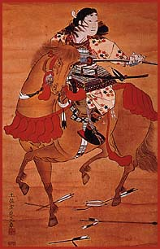
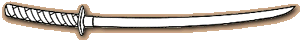

 |
The Combat-Ready Samurai Armor A samurai’s armor is tough enough to blunt an arrowhead, yet flexible enough to grant him the full range of mobility and speed he requires against an opponent. It is made of scales of lacquered iron laced together with cords of silk. Putting on armor without assistance is laborious and time-consuming. Thus, a samurai often keeps his armor preassembled on a stand. Weapons A samurai’s katana (long sword) is his main battlefield weapon. It is often handed down from father to son. The katana is the soul of a samurai, and he never appears in public without it.  A samurai uses his short sword to decapitate enemies. Should a samurai’s disgrace or his lord ever command him to end his life, he would use this sword to commit seppuku. A samurai’s bow, which often exceeds his height by the length of his head, is made of bamboo strengthened by rattan bindings. Three men may be needed to string it. The strings are made of silk coated with pine resin. The bamboo arrows are the length of a man’s outstretched arms. Helmet A samurai’s helmet, which often bears his family crest, rises to half again his height. It is made of riveted iron. The face mask, which is strong enough to blunt a spearpoint, is crafted with a frightening expression to strike fear into his enemies. |